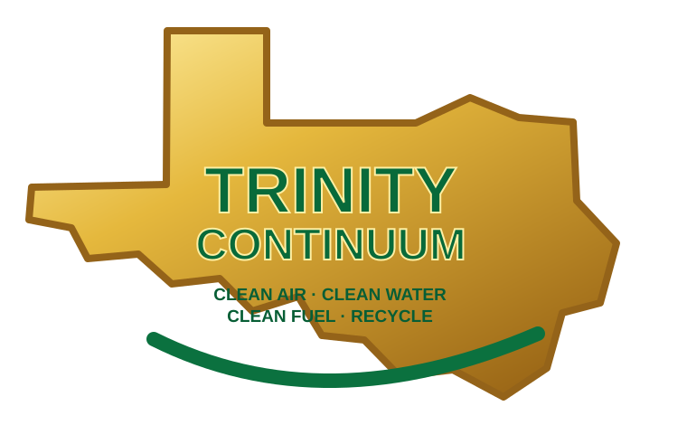

Press Releases & Media Center
Clean Air. Clean Water. Clean Fuel. Recycle.
Official company information, nonconfidential technology background and media inquiries.
Integrated Water · Power · Thermal Infrastructure

Trinity Continuum Advances Distributed Water, Power and Thermal Infrastructure Vision
TEXAS — November 2026. Trinity Continuum is developing an integrated modular utility platform intended to help data centers, industrial facilities, utilities and communities evaluate site-specific water, electrical and thermal infrastructure alternatives.
Its six-trailer architecture combines vacuum-distilled high-purity water production, electrical generation and energy recovery, thermal systems, water polishing and coordinated operating controls.
Responding to infrastructure demand
Rapid growth in computing and industrial activity is intensifying questions about electricity, water supply, heat management and community impacts. Trinity Continuum aims to bring nonconfidential engineering information to owners, operators, public agencies and stakeholders evaluating practical options.
Technology and engineering status
The current engineering planning basis includes approximately 30 million gallons of high-purity water annually at 8,000 operating hours and a 1-MW-class electrical architecture with best-case output below 1 MW. These are planning figures, not independently certified commercial performance guarantees. Actual output, emissions, water quality, safety, interconnection and permitting remain subject to independent qualification and site-specific review.
Manufacturing across America
Trinity Continuum envisions using qualified regional manufacturers, fabricators, contractors, transportation providers and service businesses alongside its proposed flagship manufacturing facility. Manufacturing locations and capacity will depend on customer demand, financing and validated production readiness.
Connected operations and local service
Proposed secure fleet monitoring could help authorized teams identify alarms, service needs, production trends and equipment condition across installations. Safety-critical controls would remain autonomous at each site.
Our history, doctrine and goals
Based in Texas, Trinity Continuum builds on industrial equipment and water-processing experience while organizing engineering, manufacturing, intellectual-property and commercial qualification records. Its guiding principles are Clean Air. Clean Water. Clean Fuel. Recycle. The goal is responsible deployment of modular infrastructure with local industry participation and common technical standards. Detailed historical milestones and biographies remain subject to source-record verification before publication.
Invitation to collaborate
Trinity Continuum welcomes nonconfidential inquiries from data-center owners and operators, engineering firms, utilities, manufacturers, contractors, communities, public agencies and journalists.
Media and business inquiries: jack@trinitycontinuum.com · trinitycontinuum.com
Publication control: Draft for management approval. No confidential drawings, trade secrets or unverified certifications are included.